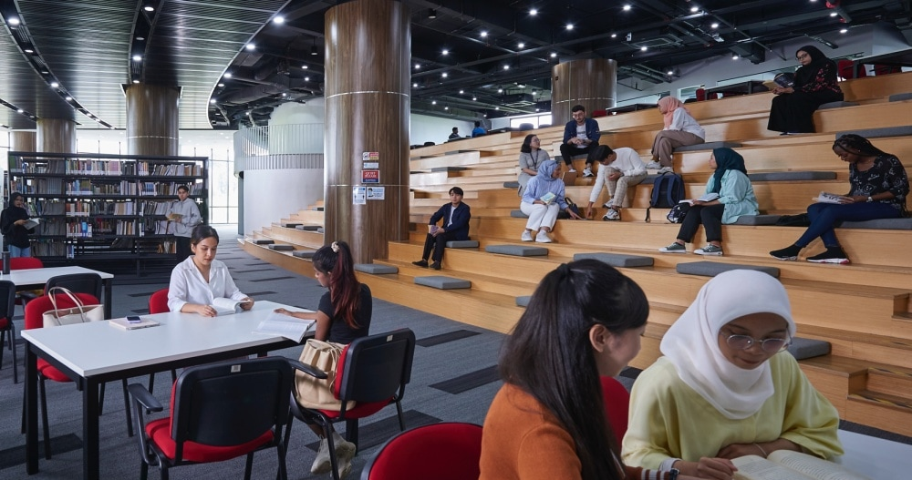
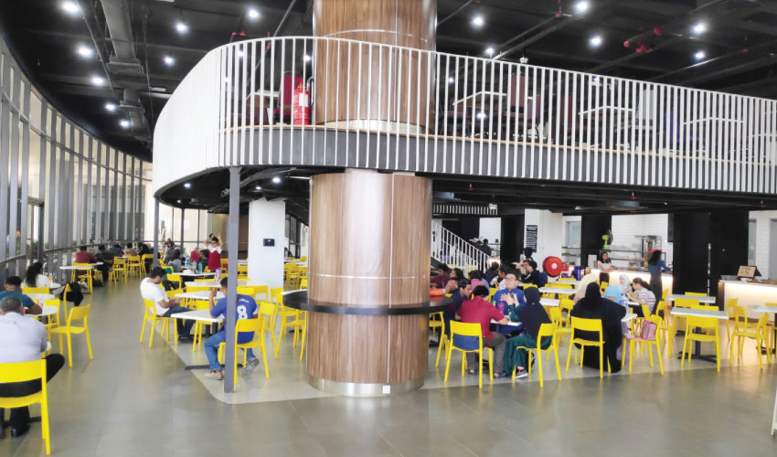
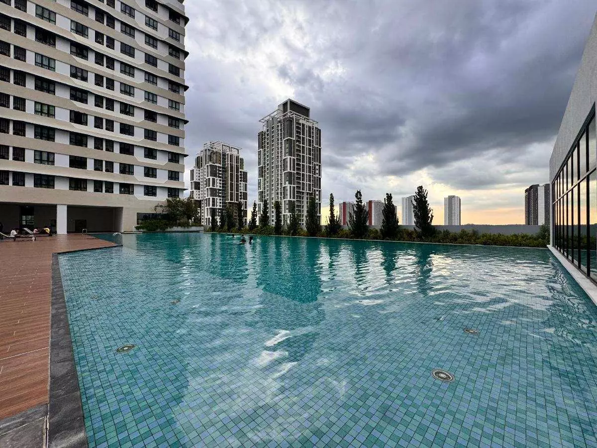

University overview
About University of Cyberjaya
The University of Cyberjaya (UoC) is a top-tier healthcare university in Malaysia, rated 5-Stars by QS. Located in Malaysia's first smart city, it is renowned for its Medical, Pharmacy, and Psychology programs.
With a modern, green-friendly campus and strong partnerships with MERCY Malaysia, UoC focuses on producing holistic graduates with a passion to care and serve the community.



International students
Study at University of Cyberjaya as an international student
Explore the University of Cyberjaya in Cyberjaya, Selangor. Compare health-related and other study pathways using the exact course requirements, campus information and dated ranking evidence.
Programmes and tuition
University of Cyberjaya UoC courses and fees for international students
| No | Program | Duration | Year 1 (RM) | Total Tuition (RM) | Final Total (With Misc) |
|---|---|---|---|---|---|
| 1 | FOUNDATION IN SCIENCE (FIS) | 1 Year | 12,466 | 18,700 | 27,400 |
| 2 | FOUNDATION IN ARTS (FIA) | 1 Year | 11,600 | 17,400 | 26,100 |
| 3 | IELTS PREPARATORY PROGRAM (IPP) | 1 Sem | 10,000 | 10,000 | 10,000 |
EMS Fees: RM3,700
Registration Fees: RM2,000
Administrative Fees: RM3,000
Total Initial Fixed Fees: RM8,700
| No | Program | Duration | Year 1 | Year 2 | Year 3 | Total Tuition |
|---|---|---|---|---|---|---|
| 4 | DIPLOMA IN ACCOUNTING (DIA) | 3 Years | 7,428 | 7,428 | 7,430 | 26,000 |
| 5 | DIPLOMA IN COSMETICS (DICOS) | 3 Years | 13,428 | 13,428 | 13,430 | 47,000 |
| 6 | DIPLOMA IN DIGITAL CREATIVE CONTENT (DDC) | 3 Years | 8,126 | 8,126 | 8,125 | 32,500 |
| 7 | DIPLOMA IN GRAPHIC DESIGN (DGD) | 3 Years | 8,126 | 8,126 | 8,125 | 32,500 |
| 8 | DIPLOMA IN NURSING (DNSG) | 3 Years | 15,300 | 15,300 | 15,300 | 45,900 |
| 9 | DIPLOMA IN OCCUPATIONAL SAFETY AND HEALTH (DOSH) | 3 Years | 13,858 | 13,858 | 13,855 | 48,500 |
| 10 | DIPLOMA IN PSYCHOLOGY (DPSY) | 3 Years | 11,750 | 11,750 | 11,750 | 47,000 |
| 11 | DIPLOMA IN MASS COMMUNICATION (DMCOMM) | 2 Years | 9,168 | 9,168 | 9,164 | 27,500 |
| 12 | DIPLOMA IN 3D ANIMATION (DANIM) | 2 Years | 8,126 | 8,126 | 8,125 | 32,500 |
| 13 | DIPLOMA IN BUSINESS ADMINISTRATION (DIBA) | 3 Years | 7,428 | 9,427 | 9,145 | 26,000 |
| 14 | DIPLOMA IN EARLY CHILDHOOD EDUCATION (DECE) | 3 Years | 10,658 | 10,656 | 10,657 | 44,300 |
| 15 | DIPLOMA IN INFORMATION TECHNOLOGY (DIT) | 3 Years | 7,256 | 7,256 | 7,260 | 25,400 |
| 16 | DIPLOMA IN PHARMACY (DPHARM) | 3 Years | 16,734 | 16,734 | 16,732 | 50,200 |
| 17 | DIPLOMA IN MEDICAL AND HEALTH SCIENCE (DMHS) | 3 Years | 19,066 | 19,066 | 19,068 | 57,200 |
| No | Program | Duration | Year 1 | Year 2 | Year 3 | Year 4 | Year 5 | Total Tuition |
|---|---|---|---|---|---|---|---|---|
| 18 | BACHELOR OF MEDICINE AND BACHELOR OF SURGERY (MBBS) | 5 Years | 79,000 | 79,000 | 79,000 | 79,000 | 79,000 | 395,000 |
| 19 | BACHELOR OF PHARMACY (HONS) (BPHARM) | 4 Years | 25,500 | 25,500 | 25,500 | 25,500 | - | 102,000 |
| 20 | BACHELOR OF PSYCHOLOGY (HONS) (BPSY) | 4 Years | 14,000 | 14,000 | 14,000 | 21,000 | - | 63,000 |
| 21 | BACHELOR OF NURSING (HONS) (BNSG) | 4 Years | 16,750 | 16,750 | 16,750 | 16,750 | - | 67,000 |
| 22 | BACHELOR OF OCCUPATIONAL SAFETY AND HEALTH (HONS) (BOSH) | 3 Years | 24,669 | 24,669 | 24,662 | - | - | 74,000 |
| 23 | BOSH (ODL MODE) | 3 Years | 13,424 | 20,137 | 26,849 | - | - | 60,400 |
| 24 | BACHELOR OF ACCOUNTING AND FINANCE (HONS) (BAF) | 3.6 Years | 12,000 | 12,000 | 18,000 | 12,000 | - | 54,000 |
| 25 | BACHELOR OF INTERNATIONAL BUSINESS MANAGEMENT (BBM) | 3.6 Years | 12,000 | 12,000 | 18,000 | 12,000 | - | 54,000 |
| 26 | BACHELOR OF BUSINESS ADMINISTRATION (HONS) (BBA) | 3.6 Years | 10,000 | 12,000 | 22,000 | 10,000 | - | 54,000 |
| 27 | BACHELOR OF CREATIVE MULTIMEDIA (HONS) | 3 Years | 15,334 | 15,334 | 38,332 | - | - | 69,000 |
| 28 | BACHELOR OF EDUCATION (HONS) EARLY CHILDHOOD EDUCATION | 3 Years | 15,334 | 15,334 | 38,332 | - | - | 69,000 |
| 29 | BACHELOR OF MULTIMEDIA (HONS) ANIMATION | 3 Years | 15,334 | 15,334 | 38,332 | - | - | 69,000 |
| 30 | BACHELOR OF ART (HONS) GRAPHIC DESIGN / ADVERTISING | 3 Years | 15,334 | 15,334 | 38,332 | - | - | 69,000 |
| 31 | BACHELOR OF INFORMATION TECHNOLOGY (HONS) (BIT) | 3.5 Years | 14,224 | 14,224 | 21,331 | 14,221 | - | 64,000 |
| 32 | BACHELOR OF BIOMEDICAL ENGINEERING TECHNOLOGY (BEET) | 4 Years | 20,500 | 20,500 | 20,500 | 20,500 | - | 82,000 |
| 33 | BACHELOR OF PHYSIOTHERAPY (HONS) (BPHYSIO) | 4 Years | 23,750 | 23,750 | 23,750 | 23,750 | - | 95,000 |
| 34 | BACHELOR OF HOMEOPATHIC MEDICAL SCIENCE (BHMS) | 5 Years | 17,000 | 17,000 | 17,000 | 17,000 | 17,000 | 85,000 |
| 35 | BACHELOR OF DIETETICS (HONS) (BDIET) | 4 Years | 23,326 | 23,326 | 23,324 | 23,324 | - | 93,300 |
| 36 | BACHELOR OF EDUCATION (HONS) TESL | 3.6 Years | 12,000 | 12,000 | 18,000 | 12,000 | - | 54,000 |
(EMS RM3,700 + Registration RM2,000 + Admin RM8,000)
*ODL and specific programs (e.g., BIT) may vary.
| No | Program | Duration | Year 1 | Year 2 | Year 3 | Total Tuition |
|---|---|---|---|---|---|---|
| 37 | MASTER OF BUSINESS ADMINISTRATION (MBA) | 1 Year | 10,000 | 5,000 | - | 15,000 |
| 38 | MBA (ODL MODE) | 1.5 Years | 7,400 | 3,400 | - | 10,800 |
| 39 | MBA DUAL AWARD | 1.5 Years | 23,000 | 11,500 | - | 34,500 |
| 40 | MBA DUAL AWARD (TOP-UP) | 0.5 Year | 20,000 | - | - | 20,000 |
| 41 | MASTER OF CLINICAL PSYCHOLOGY (MCP) | 2 Years | 22,300 | 22,300 | 11,150 | 55,750 |
| 42 | MASTER OF BUSINESS DATA SCIENCE | 1 Year | 16,334 | 8,166 | - | 24,500 |
| 43 | MASTER OF ISLAMIC FINANCE (MIF) | 1.5 Years | 15,000 | 7,500 | - | 22,500 |
| 44 | MASTER OF OCCUPATIONAL SAFETY AND HEALTH (ODL) | 1.5 Years | 11,440 | 17,160 | - | 28,600 |
| 45 | MASTER OF OCCUPATIONAL SAFETY AND HEALTH MANAGEMENT | 2 Years | 15,400 | 23,100 | - | 38,500 |
| 46 | MASTER OF SCIENCE (MSC) BY RESEARCH | 2 Years | 16,100 | 16,100 | - | 32,200 |
| 47 | MASTER OF MEDICAL SCIENCE (MMS) BY RESEARCH | 2 Years | 12,350 | 12,350 | - | 24,700 |
| 48 | MASTER OF SCIENCE IN PUBLIC HEALTH (MPH) | 1 Year | 41,000 | - | - | 41,000 |
| 49 | MASTER OF CLINICAL PHARMACY (MCLINPHARM) | 2 Years | 33,000 | - | - | 33,000 |
| 50 | MASTER OF PHARMACEUTICAL SCIENCE BY RESEARCH | 2 Years | 13,000 | 13,000 | - | 26,000 |
| 51 | MASTER OF PHYSIOTHERAPY (MPHS) | 1.5 Years | 12,332 | 6,168 | - | 18,500 |
(EMS RM3,700 + Registration RM2,000 + Admin RM8,000)
*MBA ODL and Islamic Finance have lower initial fees (approx. RM7,000).
| No | Program | Duration | Year 1 | Year 2 | Year 3 | Total Tuition |
|---|---|---|---|---|---|---|
| 52 | DOCTOR OF BUSINESS ADMINISTRATION (DBA) | 3 Years | 14,667 | 14,667 | 14,666 | 44,000 |
| 53 | DOCTOR OF PHILOSOPHY (PHD) MANAGEMENT | 3 Years | 13,000 | 13,000 | 13,000 | 39,000 |
| 54 | PHD (GENERAL) | 3 Years | 11,668 | 11,668 | 11,664 | 35,000 |
| 55 | PHD MEDICAL SCIENCE | 3 Years | 13,000 | 13,000 | 13,000 | 39,000 |
| 56 | PHD PHARMACEUTICAL SCIENCE | 3 Years | 16,334 | 16,333 | 16,333 | 49,000 |
| 57 | DOCTOR OF PHARMACY (PHARMAD) | 2 Years | 23,000 | 23,000 | - | 46,000 |
(EMS RM3,700 + Registration RM2,000 + Admin RM8,000)
Download fee schedule (PDF)
Stored fee schedule for University of Cyberjaya; check the document's validity.
University of Cyberjaya rankings: QS World, Asia & Malaysia
Verified . Each figure below names its ranking edition.
- QS World 2027
- #951–1000
- QS Asia 2026
- #434
- Malaysia · QS World 2027
- #24–25
Malaysia positions are calculated among the 32 institutions listed by QS under Malaysia in its World 2027 table. This is not a separate government ranking. An = sign marks a tie. Institutions in the same world-rank band share a national position range because their exact order is not published.
QS World and QS Asia use different methods. Overall university positions do not establish the ranking of a particular BBA, IT, MBA or other program.
Explore the campus
Campus gallery
Questions and answers
Frequently Asked Questions About University of Cyberjaya UoC
Where is the University of Cyberjaya?
The university lists its campus at Persiaran Bestari, Cyber 11, Cyberjaya, Selangor. Use the campus information and your programme's teaching arrangements when planning accommodation.
Do all University of Cyberjaya courses share medicine entry requirements?
No single medicine requirement should be applied to every course. Identify the exact programme and ask for its academic, subject and English requirements, including any professional conditions.
View ranking sources
University of Cyberjaya - QS profile · QS World University Rankings 2027 - official results spreadsheet (v1.1) · University of Cyberjaya - 2026 prospectus · QS World University Rankings 2027 - release corrections
What is the QS World ranking of University of Cyberjaya in 2027?
University of Cyberjaya is ranked #951–1000 in QS World University Rankings 2027.
Sources: University of Cyberjaya - QS profile · QS World University Rankings 2027 - official results spreadsheet (v1.1)
What is the QS Asia ranking of University of Cyberjaya in 2026?
University of Cyberjaya is ranked #434 in QS Asia University Rankings 2026.
What is the ranking of University of Cyberjaya in Malaysia?
University of Cyberjaya has Malaysia position #24–25 among the 32 institutions listed under Malaysia in QS World 2027, calculated from the published table. The world-rank band does not establish a more precise national order. This is a position within the QS World table, not a separate government ranking or a QS Asia position.
Sources: QS World University Rankings 2027 - official results spreadsheet (v1.1) · QS World University Rankings 2027 - release corrections
Do QS Stars, SETARA or partner rankings give University of Cyberjaya an overall QS rank?
QS Stars and SETARA are ratings, not numerical positions in a QS league table. A subject ranking applies to that subject, and a partner university rank belongs to the named partner. Check the institution, ranking system and edition before comparing.
Sources: QS Stars rating system
Can I use the University of Cyberjaya domestic fee schedule?
Bangladeshi applicants should use the applicable international-student schedule. The university publishes separate domestic and international fee information, which can have different charges and conditions.
Why might the UoC website and stored chart show different fees?
A stored schedule can differ from a public webpage in edition, programme scope or included charges. Compare the original labels and dates, then obtain the schedule and payable total applicable to your offer.
What are University of Cyberjaya's tuition fees for Bangladeshi students?
Bangladeshi applicants should check the international-student rate for their program and intake. This page does not establish a separate Bangladesh-only tuition rate or guarantee eligibility for a discount. Check nationality-specific charges, deposits, visa costs and scholarship conditions in the schedule and your written offer.
Where can I find the official University of Cyberjaya fee chart?
The download links on this page open the stored fee documents. One-Step is a student guidance website. Confirm the document's edition, campus, student category and validity with the university before accepting an offer or paying. The university's current written fee schedule and offer determine the amount payable.
Which year do the University of Cyberjaya fees apply to?
Use any effective dates and intake restrictions stated in the fee documents and course remarks. A single validity year has not been confirmed for every table on this page. A recent page update does not mean all underlying fees are for the current year.
Does University of Cyberjaya offer scholarships for international students?
Check any scholarship, adjusted tuition or discount columns alongside their conditions. A listed reduction is not an automatic award for every international or Bangladeshi applicant. Ask for the scholarship name, eligibility, application deadline, renewal conditions and final payable fee in writing.